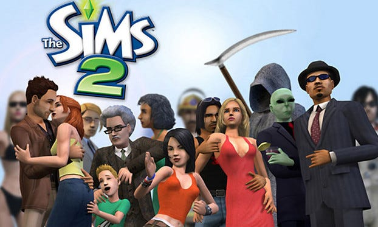

The Sims 2 Guide
The Sims 2 is a life-simulation game produced by Electronic Arts and was released in 2004. Players control virtual characters, called Sims, and can build their houses, pursue various careers, and accomplish a Sim's life goal, their Lifelong Aspiration. The game comes with neighborhoods full of townies, all with their own stories to tell. The Sims 2 originally had three neighborhoods, Pleasantview, Strangetown, and Veronaville. Click the links for more info about these neighborhoods and the families that live in them! This is not a comprehensive guide, for more information, check out the official Sims 2 Wiki here!

The Sims 2 Expansion and Stuff Packs
The Sims franchise has always offered optional content available for puchase alongside the base games. The content is split into two categories. Expansion packs contain the most in-game content, often including new neighborhoods, new game features, as well as new clothes and furniture for sims to enjoy. The other type of content, Stuff packs, are smaller typically include a set of specific items, but no new neighborhood or substantial game features. In it's lifespan, eight expansion packs and ten stuff packs were released for the Sims 2. These packs are listed below.
Expansion Packs
- The Sims 2: University
- The Sims 2: Nightlife
- The Sims 2: Open for Business
- The Sims 2: Pets
- The Sims 2: Seasons
- The Sims 2: Bon Voyage
- The Sims 2: FreeTime
- The Sims 2: Apartment Life
Stuff Packs
- The Sims 2: Holiday Party Pack
- The Sims 2: Family Fun Stuff
- The Sims 2: Glamour Life Stuff
- The Sims 2: Celebration Stuff
- The Sims 2: Happy Holiday Stuff
- The Sims 2: H&M Fashion Stuff
- The Sims 2: Teen Style Stuff
- The Sims 2: Kitchen & Bath Interior Design Stuff
- The Sims 2: IKEA Home Stuff
- The Sims 2: Mansion and Garden Stuff
© Emily Hubers 2024
Powered by ChatGPT